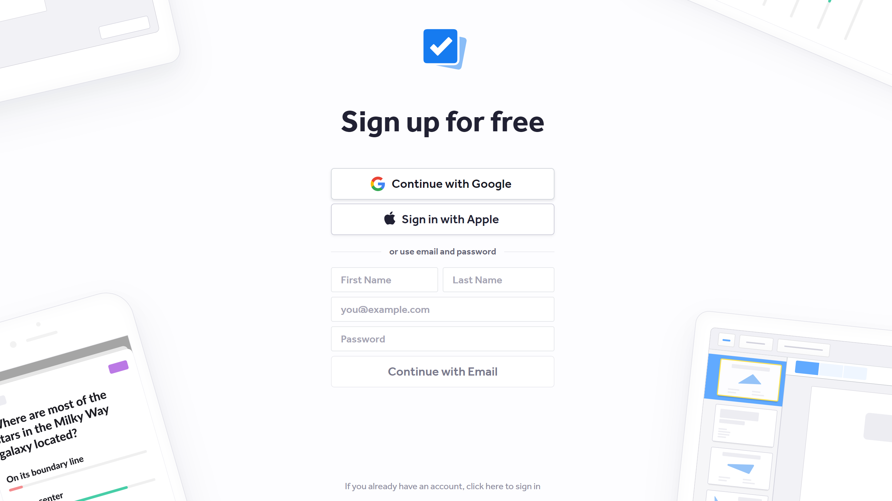
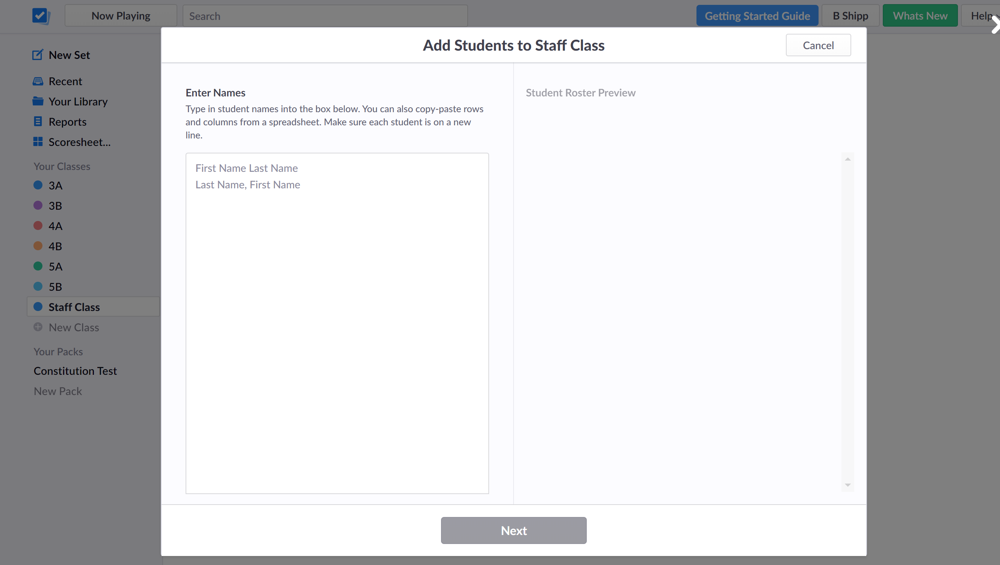
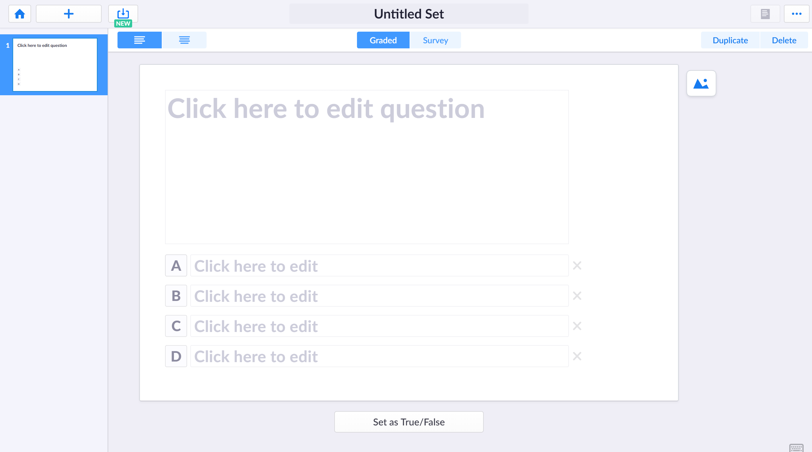

Step 1
The first step in using Plickers is to create your free account by visiting wwww.plickers.com/signup and entering your information.

Step 2
Next, you will need to create your classes and add your students to them. I suggest creating a different class for every period or subject that you teach. This will allow you to keep your data, questions, and students sperate.
From your home screen, click on the link called 'New Class' on the left hand side. A window will pop up which will allow you yo add multiple classes at a time.
Enter the names of your classes or periods and click 'Create Class'
From here you can start to add the names of your students one of two ways. First, you can add students names individually or copy and paste them from an existing roster. Once you have all of the names, click 'Next'.

On the next screen, make sure that the names are sorted the way that you want. Please note that the numbers on the left side of this window will be your stidents' card number.
Step 3
Now it is time to create your content. The easiest way to do this is to start by making sets. Sets are groups of questions that typically are assessed together. I usually use these for exit tickets or mini quizzes.

Type your question in the text box. Then create your multpile choice answer selctions, making sure that the correct answer is highlighted in green.
Step 4
Making sure that you have your Plickers cards printed out and ready to go is one of the final steps to ensure that you are ready. You can print the standard cards on your own or purchase them from Amazon by clicking here. Also, check out Module 3 for tips on getting using the cards with your students.
Step 5
The last thing you need is to make sure that you have the Plickers app downloaded on your device. From here, you will be able to access the card scanner which collects results from your students, as well as your library.
In order to begin using Plickers in the classroom, you have to make sure that the questions you want to ask our students are added to your 'Class Queue'. The questions will not project to your students if this is not done. Then select te 'Now Playing' tab on your internet browswer to project or display the questions. From the mobile app, select the class and the set of questions. Review the question with your students and then enter the scanner on the app. Have your students' hold their card to answer the question and use your phone to scan their responses. Once you are done scanning, you can instantly view and share the results.
Now comes the part where I can hopefully troubleshoot some possible issues by sharing with you some of the tips and tricks that I have learned while using Plickers.
Tip #1
When your are attempting to scan your students cards, make sure that their fingers are not covering any portion of the Plickers code. It will not register their answer if the scanner can not see the entire code. For this reason, I make sure that I print my cards and cut my cards with extra space on all sides of the code.
Tip #2
Make sure that you show your students that their names are projected on the board while you are scanning and that once you have scanned their card, there name will have a check mark next to it. This is their signal that they can put their cards down.
Tip #3
Once a students' card has been scanned by the app, they should lay their card face down. If the card is facing up and your scanner catches the code again you run the possibility of their answer being changed.
Tip #4
Make sure that there is not a lot of light,especially sun light, behind the students card while you are trying to scan. The reflection will make it hard for your scanner to read it. You may have to move around the room in order to get the best angles of their cards.
Tip #5
I print my Plickers cards on cardstock to make them more durable. I have also tried laminating the cards. This does not work well because the lamination causes a reflective glare, making the card hard to scan.
Tip #6
Distributing and collecting the cards can become a time consuming task. Finding a way for students to always have access to their card makes this easier. Doing this will depend on the setup of your classroom. You can consider having students tape their card inside of their notebook. Or if you are more of a technology driven class, you can put a copy of their card in their digital notebook or channel.